Haploblock-level functional annotation + privacy-preserving genomic hashes. Team 11 · 16–18 Sep 2026 · haploblocks.org
39,141 haploblocks (hg38) · 2,548 individuals · 5,096 haplotypes · 64-bit hash
39,141 haploblocks (hg38) + AlphaGenome Atlas | gnomAD
\ /
\___ aggregate to block __/ top-1% statistic
|
annotated haploblocks
/ \
haplograph 64-bit hash
nodes / edges / islands S|CHROM|HAPLO|CLUSTER|VAR
lift-weighted re-identification attack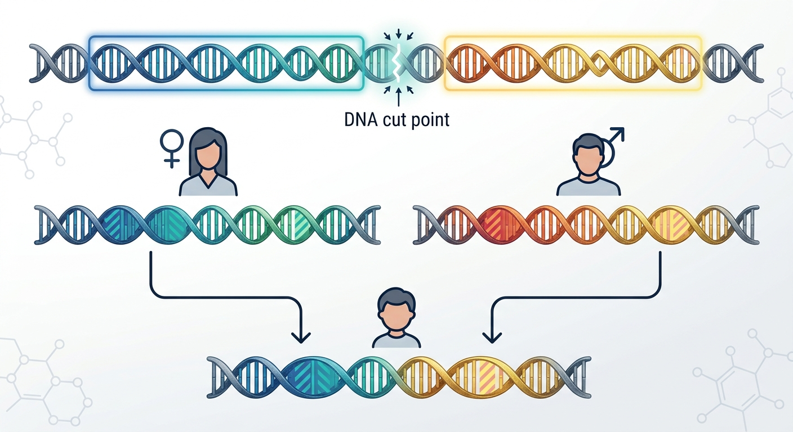
Recombination-cold blocks that are inherited as single units:
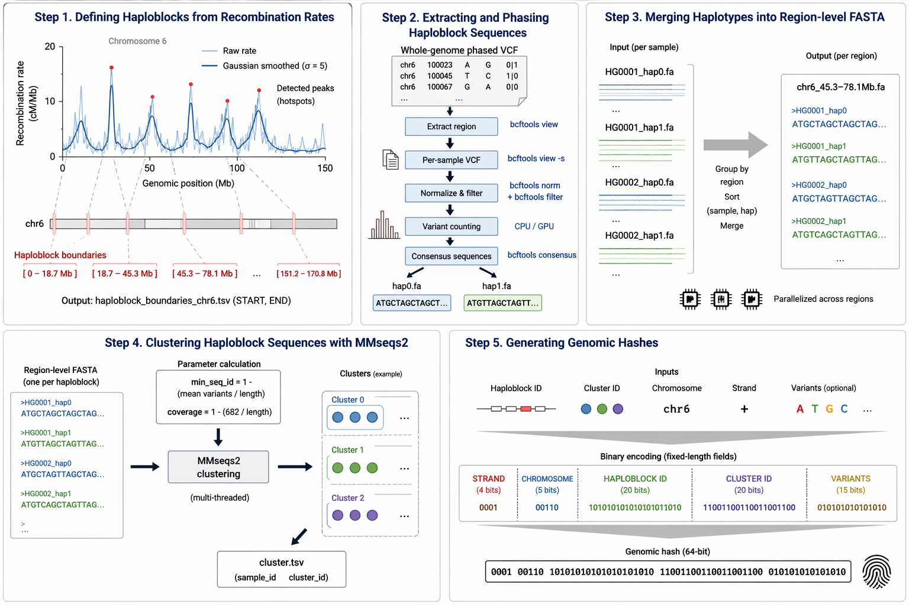
Phased haplotypes per block are merged into region-level FASTA and clustered with MMseqs2 — each cluster becomes one hash value:
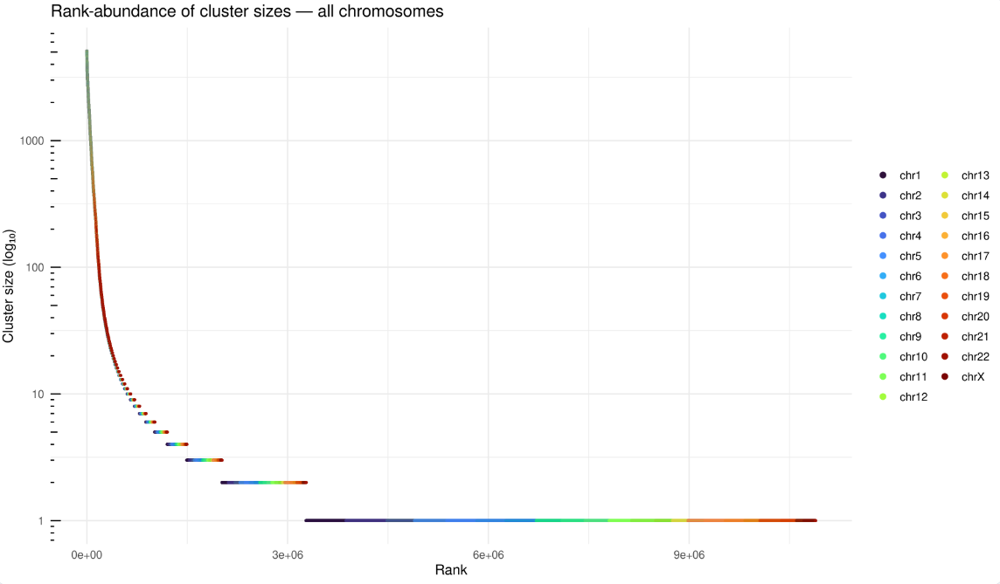
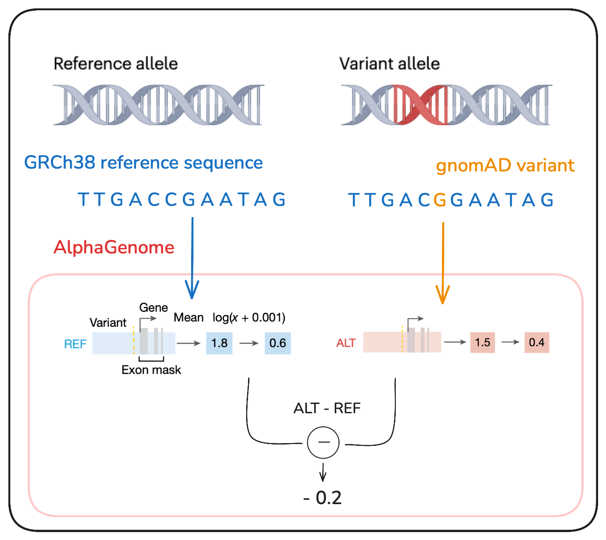
AlphaGenome reads the reference sequence plus one variant and predicts its impact on expression, splicing and regulation. AVI ranks every possible SNV genome-wide — PHRED 20 = “worse than 99% of all possible mutations”.
Missing heritability lives in rare variants with large effects (Manolio et al., Nature):
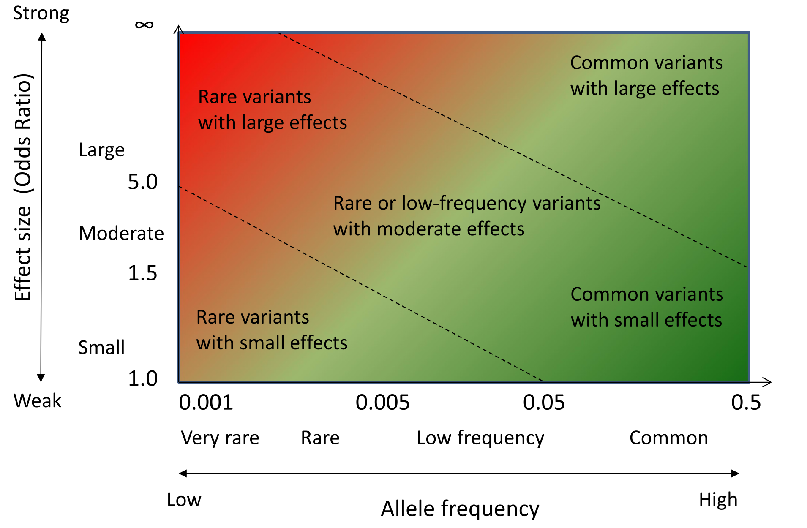
Consistency check — haploblocks ranked by AVI risk vs. real GTEx eQTLs:
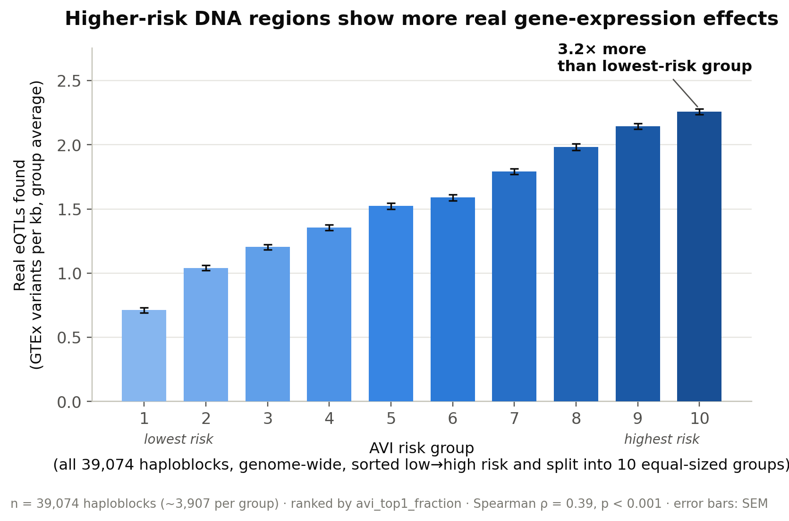
Highest-risk blocks carry 3.2× more real eQTLs than lowest-risk blocks — 39,074 haploblocks in 10 risk groups, Spearman ρ = 0.39, p < 0.001.
Hypothesis: the most constrained haploblocks should be the most deleterious if mutated. We used AlphaGenome to screen perturbations across all blocks — including regions where no natural variation exists.
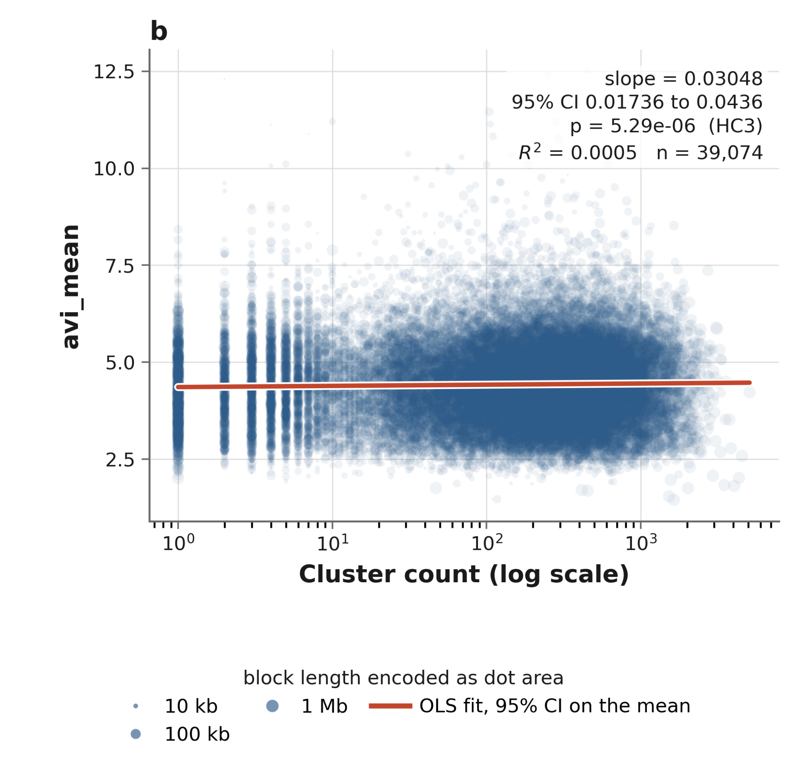
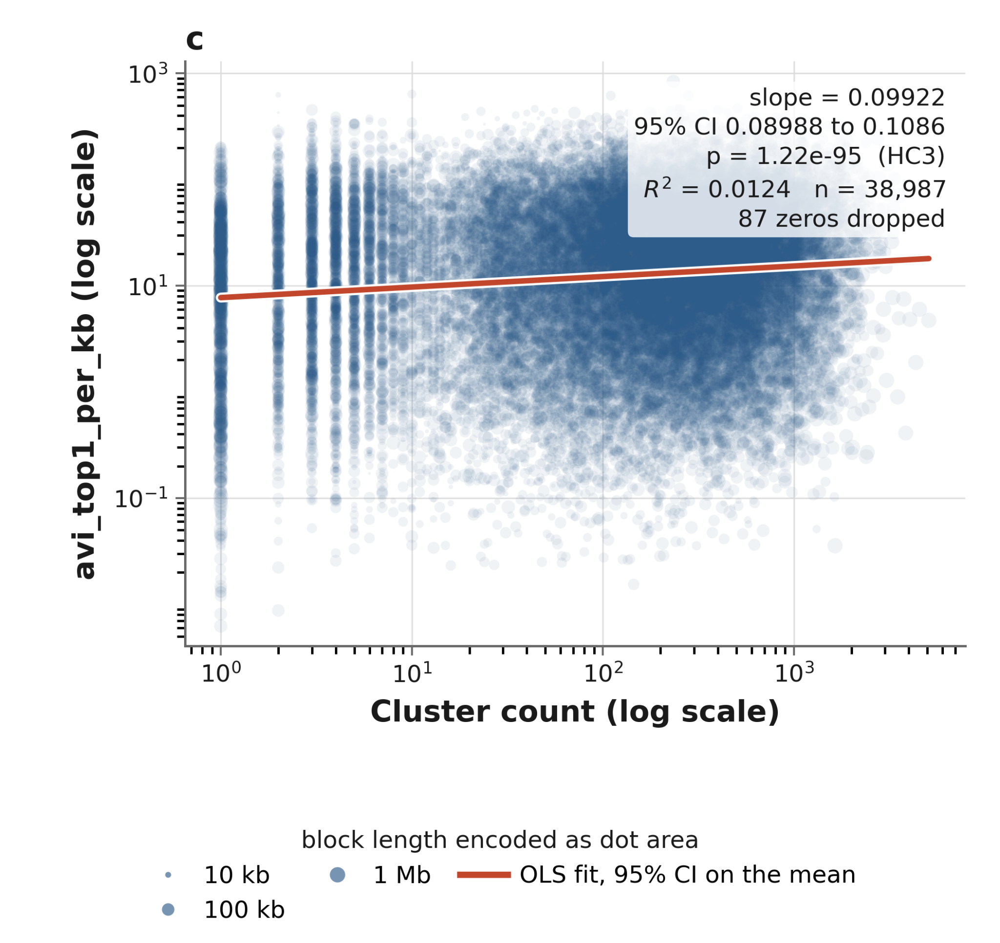
Result: the opposite sign. AVI rises with haplotype diversity, robust across every specification (+0.030, p = 5×10⁻⁶; +0.099, p = 10⁻⁹⁵) — likely an allele-frequency artifact: AlphaGenome is least reliable exactly where empirical variation is absent.
GO enrichment on genes overlapping the blocks (dot size = count, colour = p.adj, x = GeneRatio):
| Molecular function | Biological process | Cellular component |
|---|---|---|
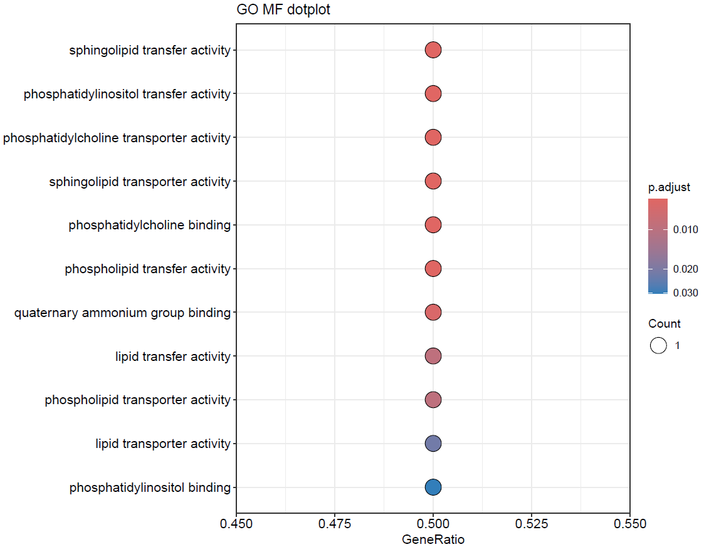 |
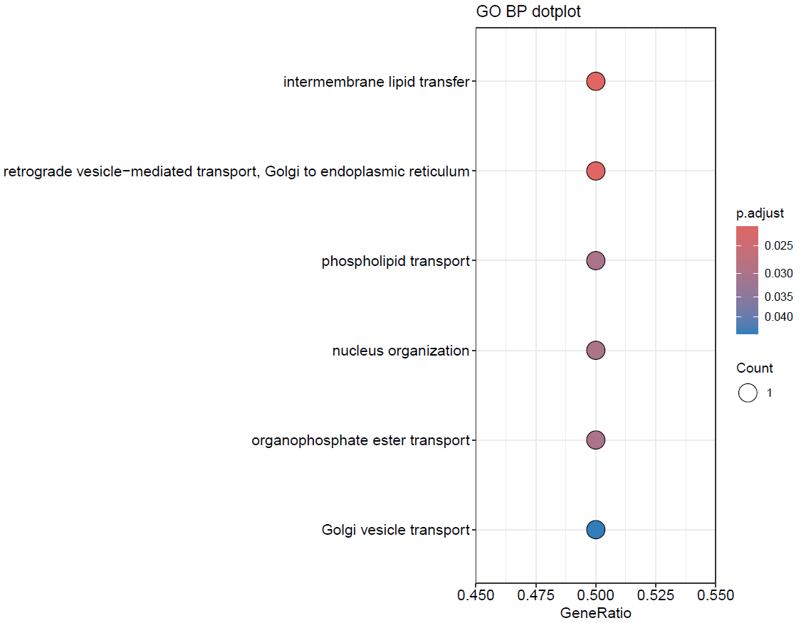 |
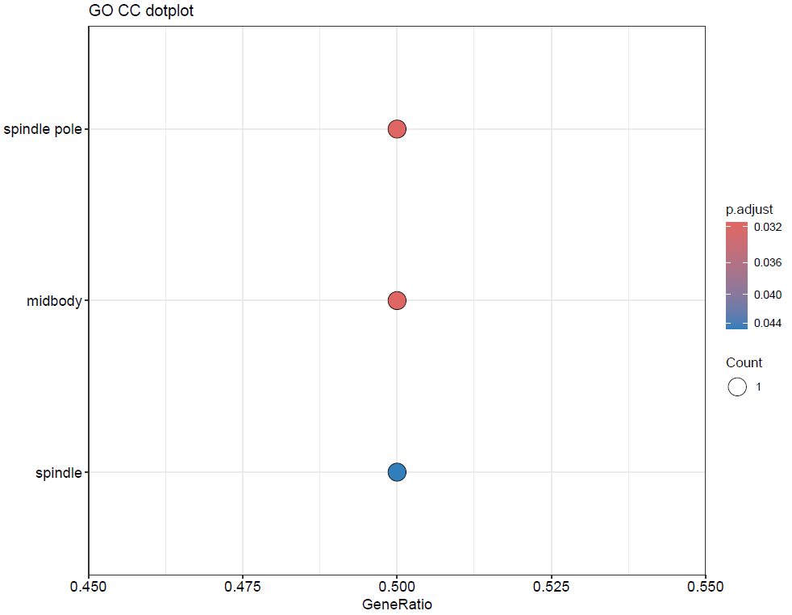 |
Example block — chr22:27,840,691–28,224,919 (PITPNB, TTC28 · 60 transcript isoforms):
Each (block, cluster) pair encodes to one 64-bit word — strand, chromosome, haploblock, cluster, variants, AVI:
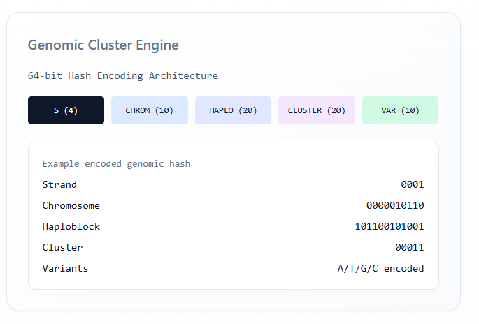
| Field | Bits | Values |
|---|---|---|
| strand | 1 | hap1 / hap2 |
| chrom | 5 | 1–24 |
| block | 16 | 0–65,535 |
| cluster | 13 | 0–8,191 |
| variants | 10 | 0–1,023 |
| avi | 8 | quantised PHRED |
| reserved | 11 | — |
| total | 64 | 53 used |
Re-identification exposure (a singleton cluster identifies a haplotype by one block alone):
| Singleton clusters genome-wide | 7.7 M |
| Blocks containing at least one singleton | 91.5% |
| Blocks at which the average person is a singleton | 3,027 |
| Suppressing the 5,000 most-exposed blocks | removes 50.8% of singletons |
Mitigation — two orders of magnitude apart:
| Strategy | Cost |
|---|---|
| Suppress whole blocks until no singletons remain | 91.5% of blocks lost |
| Per-cluster k-anonymity (k = 2) | 3.9% of the dataset suppressed |
AVI scores and annotations stay block-level; no individual allele states are exposed.
| Folder | What |
|---|---|
annotate_atlas/ |
AlphaGenome Atlas scoring, chr22 pilot QC, GTEx comparison |
intersect-constraint-AVI/ |
constraint vs AVI analysis |
bio_annotations/ |
GO / Reactome enrichment |
hash/ |
64-bit encoding (haplohash.py) |
reid/ |
re-identification attack |
| Who | Track |
|---|---|
| Mauricio Moldes | block filtering, gene counts |
| Alejandra Caballero, Mina | annotation databases, pruning |
| Markus Marandi | AlphaGenome atlas |
| Robert Campbell, David Bonet | effect sizes (burden / SKAT / ACAT) |
| Aditya Kumar Karna | encoding, hashing, hash attack |
1000G — 2,548 individuals, 26 populations, data.haploblocks.org. hg38, SNVs only. UKB pending.